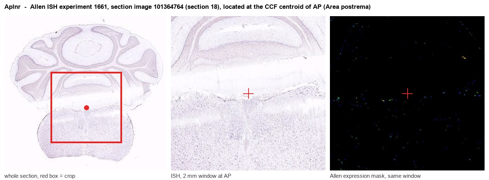
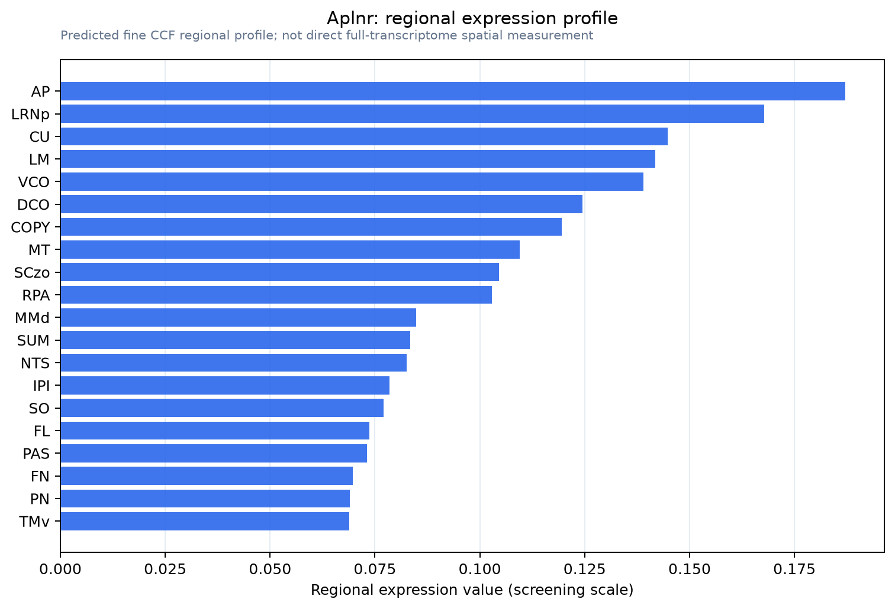

Aplnr
Apelin receptor (Angiotensin receptor-like 1) (G protein-coupled receptor APJ) (MSR)
Spatial tier: RESTRICTED · Class: GPCR · Top region: AP (Area postrema) · Positive regions: 23/554
46.9Discovery Score
35.2Targetability Score
CEvidence grade C
What this means: Aplnr: fine CCF profile is restricted toward AP (top regions: AP, LRNp, CU, LM, VCO; 23 positive regions); direct spatial validation is still required.
Function in AP: evidence, prediction, innovation
- Gene function
- APLNR (APJ) is a class A G-protein-coupled receptor activated by the peptides apelin and Elabela/Toddler. It signals through Gi and Go and recruits beta-arrestin, and it regulates cardiovascular tone, angiogenesis and glucose handling. In the brain the apelin-APJ system counter-regulates vasopressin release and therefore shapes fluid and electrolyte balance.
- Region function
- The area postrema is a circumventricular organ on the floor of the fourth ventricle with fenestrated capillaries and no blood-brain barrier; it samples circulating toxins, hormones and peptides and drives nausea, conditioned taste avoidance and suppression of feeding through the NTS and parabrachial nucleus.
- Published in this region
- expression only Expression is documented but function is not. Reaux et al. 2002 mapped apelin-synthesising neurons across rat brain, and Griffiths et al. 2020 report apelin and APJ in neurons and glia of the sensory circumventricular organs including the area postrema, with APJ upregulated in the subfornical organ of spontaneously hypertensive rats. Roberts et al. 2009 showed abnormal fluid homeostasis in apelin-receptor knockout mice and Sinen et al. 2021 implicate central autonomic pathways in apelin-induced gastrointestinal dysmotility, but neither isolated the area postrema.
- Predicted function
- Prediction: APJ on area postrema neurons should let circulating apelin, which rises with exercise and metabolic stress, directly modulate the AP-to-NTS/parabrachial axis, biasing gastric motility, blood pressure and the nausea threshold. Chemogenetic silencing of AP Aplnr cells, or local ML221, should blunt the bradycardic and gastro-inhibitory responses to peripheral apelin and reduce apelin-induced suppression of food intake; local [Pyr1]apelin-13 should produce the mirror-image increase in AP and NTS Fos with slowed gastric emptying.
- Innovation
- ★★★★☆ 4/5 Apelin-APJ is well studied in the subfornical organ and hypothalamus but essentially untested in the area postrema, despite ready-made knockout mice and selective ligands.
- Tools
- Aplnr knockout and Apj-CreERT2 mice; agonists [Pyr1]apelin-13 and ELA-32; antagonists ML221 and F13A; anti-APJ antibodies. AP access via fourth-ventricle or direct AAV; combine with Gfral-Cre or Calcr-Cre for cell-type specificity.
- References
Direct evidence located at the region

Allen ISH experiment 1661, section image 101364764 (section 18): the section that contains the CCF centroid of Area postrema according to the Allen image-to-atlas alignment (reference_to_image), with a 2 mm window around that point. Left: whole section, red box = window. Middle: ISH signal. Right: Allen's expression-mask view of the same window. open this image in the Allen viewer
Look it up yourself: Allen Mouse Brain ISH for AplnrAllen reference atlas: AP (structure 207)ABC Atlas MERFISH viewer(in the ABC Atlas choose dataset MERFISH-C57BL6J-638850-CCF, colour cells by gene "Aplnr" or by parcellation_substructure "AP")All genes confined to AP + 3-D brain
Direct spatial evidence
MERFISH REGION LOCATOR

Regional expression figure

Predicted WMB × fine-CCF profile; not direct full-transcriptome spatial measurement.
Spatial profile
Evidence and specificity
- Evidence status
- PREDICTED_FINE
- Direct sources
- None; predicted localization only
- Exclusive threshold
- 12 positive regions out of 554
- Spatial specificity
- 0.337
- Top-region fraction
- 0.061
- Filter status
- PASS
Interpretation limits
- Cell-type-to-region projection is imputed expression, not direct spatial measurement.
- Adult reference atlases do not establish stability across age, sex, strain, state, or disease.
- Transcript abundance does not guarantee protein abundance or genetic-tool performance.